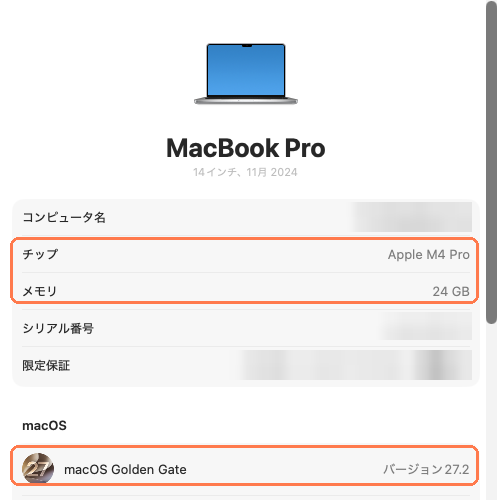
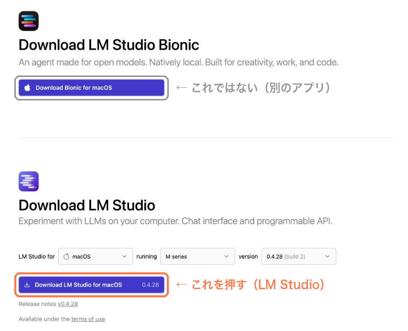
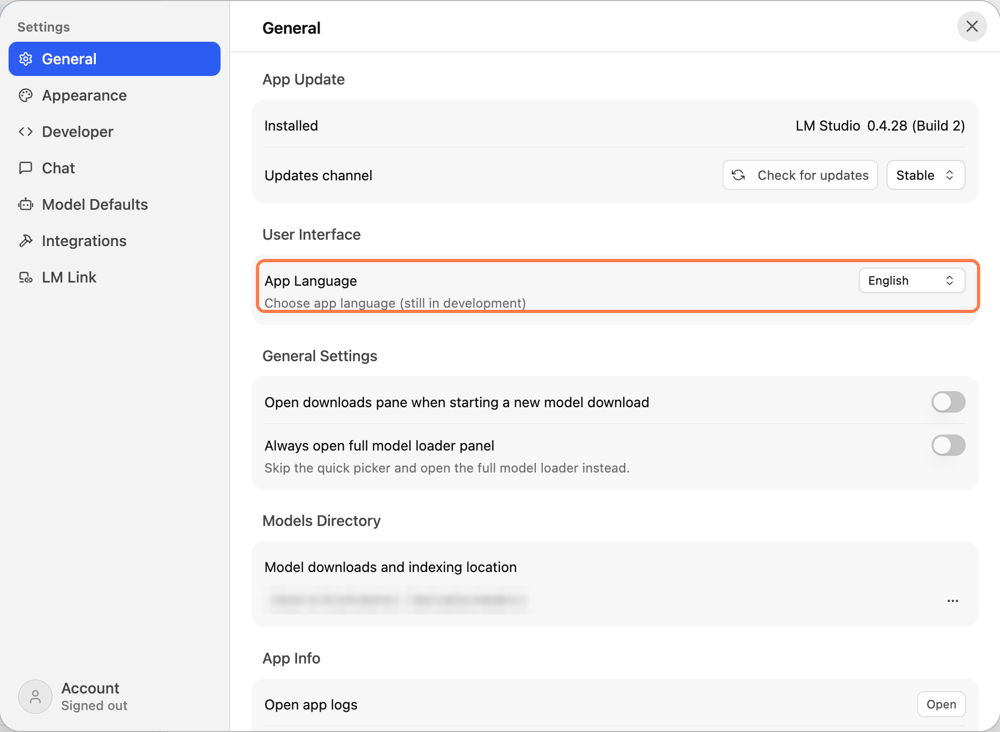
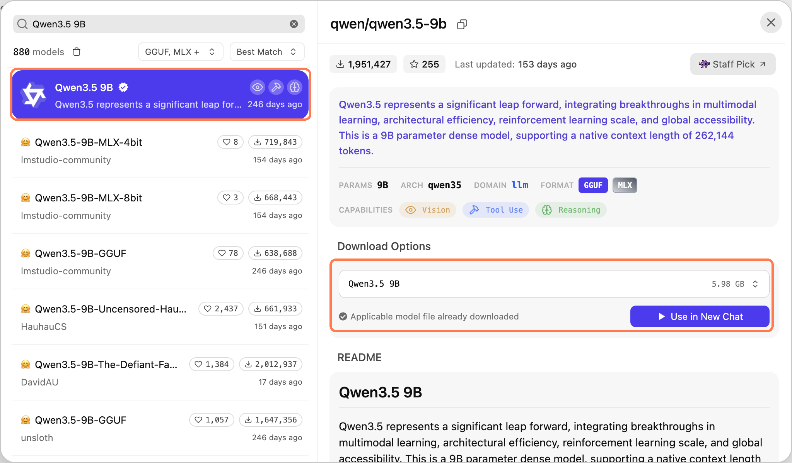
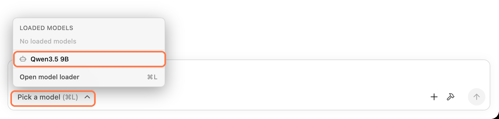
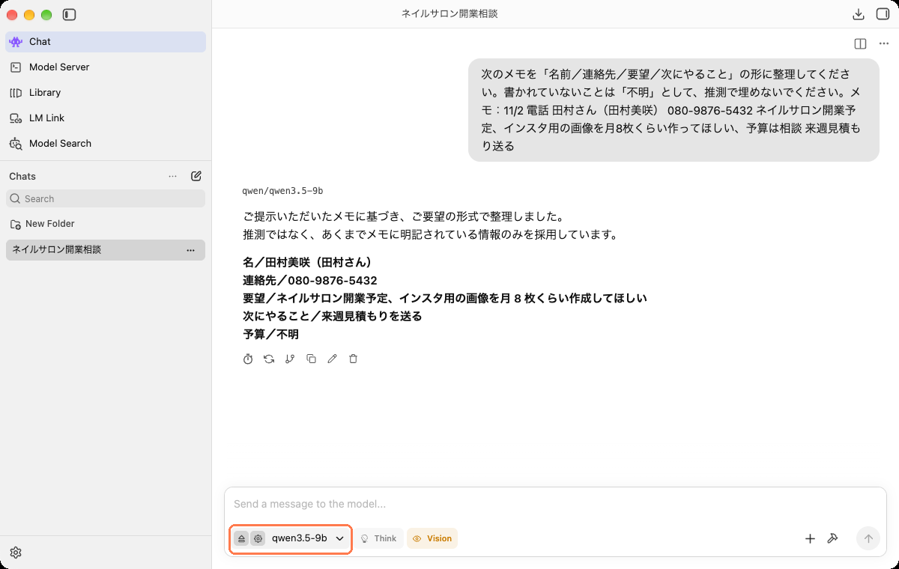
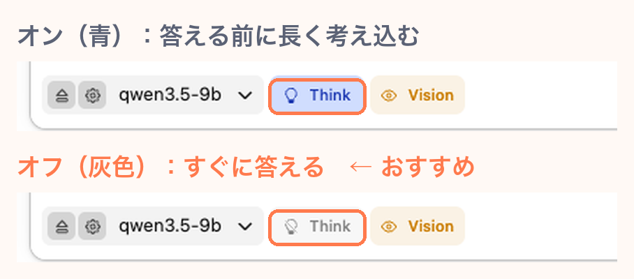
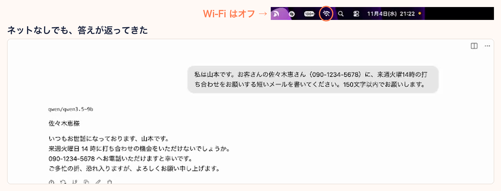
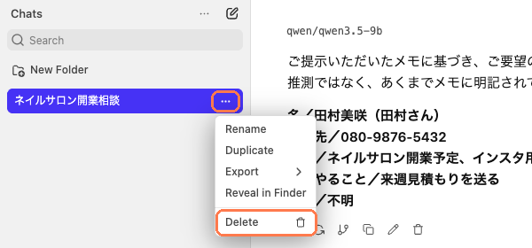

入力した文章は、どこへ行く？
ChatGPT や Claude は、AI の本体が外部のサーバーにあるため、入力した文章は必ずそこへ送られます。ローカル AI は、AI の本体（モデル）を自分の Mac にダウンロードして使うので、文章を送る相手がそもそもいません。Wi-Fi を切っても動きます。
できること・苦手なこと
- できることメールの返信の下書き、メモ・議事録の整理、文章の要約・校正、悩みの壁打ち。数秒〜10 秒ほどで、自然な日本語が返ってきます
- 苦手なこと最新の ChatGPT・Claude より、はっきり 1〜2 段落ちる賢さです。計算や事実をそれらしく間違えることがあります
おすすめは、個人情報が入るものはローカル AI、それ以外は ChatGPT・Claude という使い分けです。
用意するもの
- Apple シリコン（M1〜M5）の Mac（Intel の Mac は使えません）
- macOS 14（Sonoma）以上
- メモリ 16GB 以上がおすすめ（8GB でも小さいモデルなら動きます）
- ストレージの空き 15GB ほど
所要時間は 30 分ほどです（ほとんどはダウンロードの待ち時間です）。
Mac で使えるか確かめる
Mac で
- 画面左上の →「この Mac について」を開きます（「システム設定」→「一般」→「情報」でも同じものが見られます）。
- チップが「Apple M〇」、macOS が 14 以上なら OK です。メモリの量を覚えておきます（STEP 2 で使います）。
- →「システム設定」→「一般」→「ストレージ」で、空きが 15GB 以上あるか確かめます。

メモリに合うモデルを選ぶ
下の表で
ローカル AI は、モデル全体が Mac のメモリに入らないと動きません。メモリの量で、使えるモデルが決まります。
| Mac のメモリ | 大きさ | モデルの例 | 使用感 |
|---|---|---|---|
| 8GB | 3〜4B | Qwen3.5 4B など | 短い文章の整理なら使える |
| 16〜24GB | 8〜9B | Qwen3.5 9B | メール・要約・整理なら十分。メモリは約 6GB 使う |
| 32GB 以上 | 27〜35B | Qwen3.6 27B、Gemma 4 31B など | かなり自然。そのぶん遅い |
- 「B」はモデルの大きさの単位です。数字が大きいほど賢く、重くなります。
- 日本語なら Qwen（クウェン）系がおすすめです。
- 迷ったら小さいほうから試してください。大きすぎると Mac 全体が重くなります。
- 表のモデル名は 2026 年 11 月時点の例です。新しいモデルは次々に出ます。
LM Studio を入れる
Mac で
モデルを動かすアプリとして、無料の LM Studio を使います。ChatGPT のような画面で使えます。
- 公式のダウンロードページ lmstudio.ai/download を開きます。
- 下のほうの「Download LM Studio for macOS」を押します（約 570MB）。上にある「Download Bionic for macOS」は別のアプリなので押さないでください。
- ダウンロードしたファイルを開き、LM Studio を「アプリケーション」フォルダにドラッグします。
- LM Studio を起動します。


モデルをダウンロードする
LM Studio で
- 左のメニューの「Model Search」（虫めがねのアイコン）を開きます。
- 検索欄にモデル名（例：
Qwen3.5 9B）を入れます。 - いちばん上に出る、名前の横に ✓ が付いた公式のものを選びます。Mac に合った形式（MLX）を自動で選んでくれます。
- 右側の「Download Options」で大きさ（Qwen3.5 9B なら約 6GB）を確かめて、「Download」を押します。回線によっては数十分かかります。

一覧には「MLX-4bit」「MLX-8bit」などの版も並んでいます。4bit・8bit は「軽量化の度合い」で、4bit なら性能をあまり落とさずにメモリの使用量をおよそ半分にできます。迷ったら、上の公式のものを選べば大丈夫です。
読み込んで会話する
LM Studio で
- 左のメニューの「Chat」を開き、「New chat」を押します。
- 入力欄の左下にある「Pick a model」を押して、ダウンロードしたモデルを選びます。
- 確認の画面が出たら「Load Model」を押します。読み込みに 15 秒ほどかかります。
- 入力欄に文章を入れて、右下の矢印ボタンで送ります。


【重要】「考える」機能をオフにする
新しいモデルは、答える前に「考える過程」を書き出す機能を持っています。オンのままだと、簡単な質問でも数十秒考え込みます。作者の環境では、長い指示で 5 分近く考え続けたうえに、答えが出ないまま止まりました。
入力欄の下、モデル名の右にある「Think」ボタンを押して、灰色（オフ）にしてください。青いときがオンです。オフにすると、2〜10 秒ほどで答えるようになります。

まず 1 つ試してみる
架空のメモで、整理を頼んでみましょう。そのままコピーして貼り付けてください。
次のメモを、下の形に整理してください。書かれていないことは「不明」としてください。推測で埋めないでください。 ・名前： ・連絡先： ・要望： ・次にやること： --- 11/2 電話 田村さん（田村美咲） 080-9876-5432 ネイルサロン開業予定、インスタ用の画像を月8枚くらい作ってほしい、予算は相談 来週見積もり送る
※ 名前・電話番号は架空です。
外に出ていないか、自分で確かめる
Mac で
LM Studio の公式ドキュメント（アプリ内の「Offline Operation」）にも、モデルとの会話で入力した内容は端末の外に出ないと書かれています。そのうえで、自分の目で確かめておきましょう。
方法 1：Wi-Fi を切って使ってみる（いちばん確実）
画面右上の Wi-Fi をオフにして、LM Studio で会話してみてください。ネットがなくても返事が返ってくれば、計算は Mac の中だけで行われています。個人情報を扱うときは、最初から Wi-Fi を切って使うのがいちばん安心です。

方法 2：ネットを使う場面を知っておく
LM Studio がネットを使うのは、主に次のときだけです（公式ドキュメントより）。
- Model Search でモデルを探す・ダウンロードするとき
- 動作用の部品（ランタイム）を更新するとき
- 起動時に、アプリの新しい版がないか確認するとき
会話の中身を送る場面ではありません。ダウンロードが終わったら、Wi-Fi を切って使う流れにすると安心です。アプリを更新したときは、念のため方法 1 でもう一度確かめてください。
あわせて知っておきたいこと
会話の履歴は Mac の中に残る
会話は外に出ませんが、Mac の中には保存されます。保存場所は ~/.lmstudio/conversations/ です。Mac を家族と共用している場合などは、個人情報を扱った会話を使い終わったら消しておきましょう。
- アプリの中で消す：左の会話の一覧で、会話の右の「…」→「Delete」
- まとめて消す：Finder で
⌘ command＋shift＋Gを押し、上の場所を入れて開く → 中のファイルを削除して、ゴミ箱を空にする

Time Machine でバックアップを取っている場合は、バックアップにも残ります。
Mac そのものの守りも忘れずに
ローカル AI が守れるのは「ネットの向こうに文章を渡さない」ところまでです。Mac 自体が盗まれたり、ウイルスに感染したりすれば、中の情報は危険にさらされます。
- Mac にログインパスワードを設定する
- FileVault（ディスクの暗号化）をオンにする：「システム設定」→「プライバシーとセキュリティ」→「FileVault」
- macOS を最新に保ち、出どころの分からないアプリを入れない
困ったとき
答えが返ってこない・ずっと考えている
動きがとても遅い・Mac が固まる
日本語が不自然・途中で英語になる
ダウンロードが途中で止まる・容量が足りない
LM Studio が開けない・インストールできない
次のステップ：仕事で安全に使いこなす
入れただけでは、ローカル AI はまだ半分です。小さい AI は「察する力」が弱く、頼み方しだいで結果が大きく変わります。作者が実際に試して、失敗したところを直した使い方を note にまとめました。
- コピペで使える指示 9 本（メール返信・顧客メモ・議事録・契約書の下読み ほか）
- 個人情報を伏せ字にしてから ChatGPT・Claude に渡し、答えを元に戻す方法
- 実際に試したら、最初は伏せ字が漏れた。その実例と対策